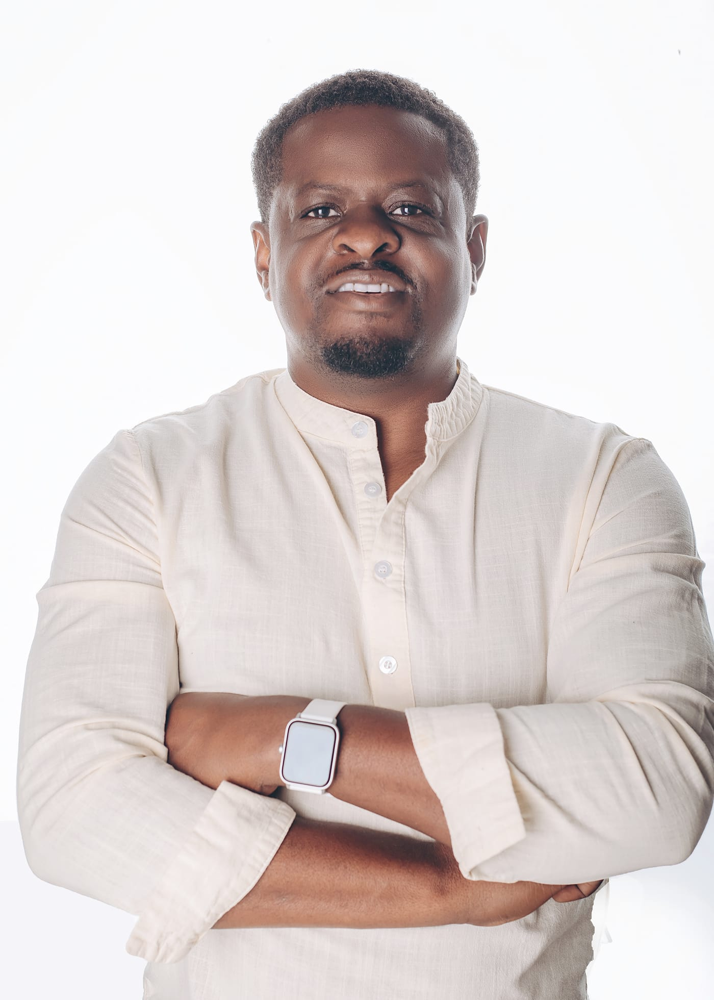
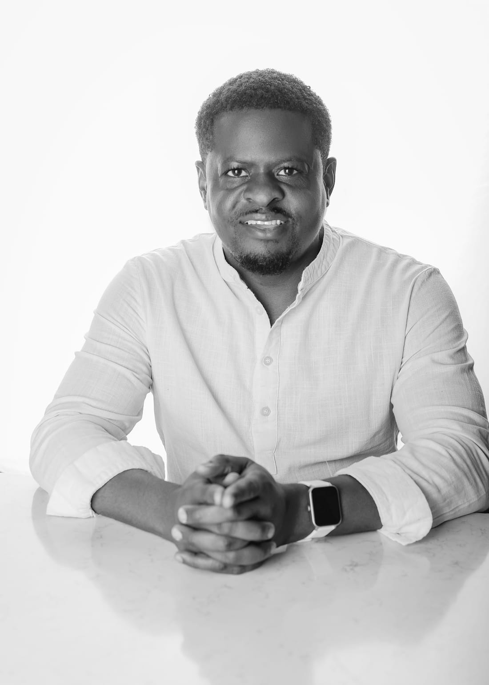

One person, three postures. I listen, create and bring ideas to life across conversations, media and real estate.
Book a Listening Session
Listening Hub. Space to speak. Room to think. Supportive conversation, not therapy or clinical treatment.
Book a Listening Session